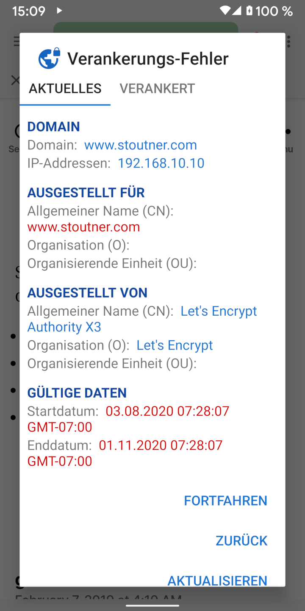
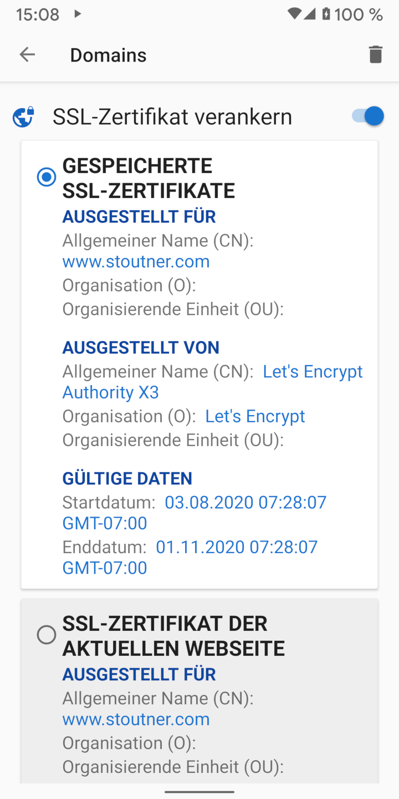

Wenn Sie verschlüsselte URLs (also solche, die mit HTTPS beginnen) besuchen, verwendet der Webserver ein SSL-Zertifikat, um einerseits die zum Browser gesendeten Informationen zu verschlüsseln und andererseits um sich selbst zu identifizieren. Der Zweck der Server-Identifikation ist dabei, zu verhindern, dass ein Rechner zwischen Server und Ihrem Browser geschaltet werden kann, der vorgibt der Server zu sein und die übertragenen Informationen auf dem Transportweg entschlüsseln oder verändern kann. Solche Angriffe werden als "Man-in-the-Middle-Atacken" (MITM) bezeichnet. SSL-Zertifikate werden von Zertifikats-Stellen generiert, d.h. Unternehmen, die die Identität eines Servers überprüfen und dafür (meist gegen Entgelt) ein Zertifikat ausstellen. Android beinhaltet eine Liste zuverlässiger Zertifikats-Stellen und akzeptiert jedes von einer solchen ausgestellte Zertifikat einer Webseite. Es wird dabei davon ausgegangen, dass eine Organisation kein SSL-Zertifikat für eine Domain beantragen kann, die nicht ihr gehört. In der Praxis konnten dies jedoch bereits viele Regierungen und große Unternehmen tun.
Mittels Zertifikats-Verankerung ("Pinning") kann Clear Browser angewiesen werden, nur ein spezielles SSL-Zertifikat für eine Domäne zuzulassen. Jedes andere Zertifikat - auch wenn dies gültig ist - wird in diesem Fall abgelehnt.
SSL-Zertifikate laufen zu einem festgelegten Datum ab, sodass auch verankerte Zertifikate legitimerweise von Zeit zu Zeit aktualisiert werden müssen. In der Regel müssen SSL-Zertifikate in der Mehrzahl der Fälle nicht verankert werden. Für jene, die jedoch damit rechnen müssen, dass mächtige Organisationen auf sie abzielen, kann das verankern von SSL-Zertifikaten Man-in-the-middle-Attacken aufdecken und ggf. vereiteln. Clear Browser bietet auch die Möglichkeit, IP-Adressen zu verankern.
SSL-Zertifikate können in den Domänen-Einstellungen verankert werden. Neben dem Schutz gegen MITM-Attacken kann das Verankern von Zertifikaten auch für selbst-erzeugte Zertifikate genutzt werden (z.B. bei WLAN-Routern oder Access-Points). In diesen Fällen werden die sonst üblichen Fehlermeldungen unterdrückt, wenn die Website des Geräts geladen wird. Durch Antippen des aktiven Tabs wird das SSL-Zertifikat der aktuell darin angezeigten Webseite angezeigt.